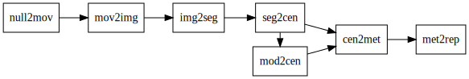

Welcome to Workflow Colony Formation’s documentation!¶
Workflow Colony Formation¶
Model of colony formation informed by timelapse video of replated cells.
Features¶
[ ] Load raw image from network storage
[ ] Segment and track raw file
[ ] Store segmentations in
exp_tracks[ ] Create set of starting conditions for runs based on first image frame
[ ] Store starting conditions on disk in
steps/sim_init[ ] Load starting conditions into model and run
[ ] Store model output in
steps/sim_tracks[ ] …
Workflow¶
The steps and their dependencies or flow is described by the graph:
{kind=link}
``null2mov` <https://github.com/AllenCellModeling/workflow_colony_formation/tree/master/workflow_colony_formation/steps/null2mov>`_ copies the timelapse data from on-premises storage and uploads it to quilt
``mov2img` <https://github.com/AllenCellModeling/workflow_colony_formation/tree/master/workflow_colony_formation/steps/mov2img>`_ writes out readable frames from the complicated mosaic CZI
``img2seg` <https://github.com/AllenCellModeling/workflow_colony_formation/blob/master/workflow_colony_formation/steps/img2seg/img2seg.ipynb>`_ segments the DNA channel from each frame using Cellpose
``seg2cen` <https://github.com/AllenCellModeling/workflow_colony_formation/blob/master/workflow_colony_formation/steps/seg2cen/seg2cen.ipynb>`_ takes the centroids of every segmented cell, does some post processing, and saves them as a simplified CSV
mod2centakes the centroid inputs and runs a parameter sweep, outputting simulated centroid locationscen2metcomputes summary metrics for the experimental and simulated tracesmet2repproduces output images summarizing the computed metrics
Installation and running¶
Locally clone and run:
git clone https://github.com/AllenCellModeling/workflow_colony_formation.git
cd workflow_colony_formation
./run.py
Documentation¶
For full package documentation please visit AllenCellModeling.github.io/workflow_colony_formation.
Available under the Allen Institute Software License